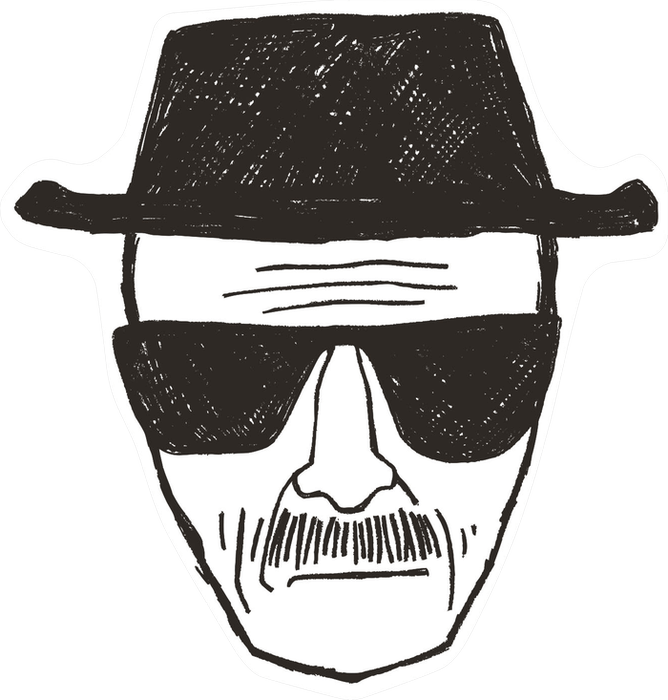

O nome "Heisenberg" é uma homenagem ao físico Werner Heisenberg, famoso pelo Princípio da Incerteza.
Breaking Bad acompanha Walter White, um professor de química diagnosticado com câncer terminal, que decide fabricar metanfetamina com seu ex-aluno Jesse Pinkman. Uma jornada de transformação, moralidade e consequências.
Walter 'Heisenberg' White é um professor de química que se torna um fabricante de metanfetamina após ser diagnosticado com câncer.
Um ex-aluno de Walter White que se torna seu parceiro na fabricação de metanfetamina. Ele é um personagem complexo, lutando com suas próprias questões morais e emocionais.
Um advogado carismático e astuto que se torna o conselheiro legal de Walter White e Jesse Pinkman. Ele é conhecido por sua ética questionável e táticas legais criativas.
Um empresário sofisticado e reservado que administra uma rede de restaurantes de fast-food como fachada para seu império de drogas. Conhecido por sua inteligência, disciplina e frieza, Gustavo Fring é um dos mais perigosos e estratégicos antagonistas da série.
Walter White, um professor de química, descobre que tem câncer e decide fabricar metanfetamina para garantir o futuro financeiro de sua família.
Ano de Lançamento: 2008
Números de episódios: 7
Walter e Jesse enfrentam as consequências de suas ações, enquanto a relação entre eles se torna mais complicada.
Ano de Lançamento: 2009
Números de episódios: 13
Walter e Jesse se envolvem mais profundamente no mundo do crime, enfrentando novos desafios e inimigos.
Ano de Lançamento: 2010
Números de episódios: 13
A batalha entre Walter e Gus Fring atinge seu clímax, enquanto Walter se transforma cada vez mais em Heisenberg.
Ano de Lançamento: 2011
Números de episódios: 13
Walter White se torna o chefão do tráfico de metanfetamina, mas sua ambição e egoísmo levam a consequências devastadoras.
Ano de Lançamento: 2012
Números de episódios: 16
O nome "Heisenberg" é uma homenagem ao físico Werner Heisenberg, famoso pelo Princípio da Incerteza.
O endereço da casa de Walter White realmente existe em Albuquerque, Novo México, e virou ponto turístico.
O famoso chapéu preto de Heisenberg foi introduzido para proteger Bryan Cranston do sol durante as gravações.
O personagem Saul Goodman, interpretado por Bob Odenkirk, se tornou tão popular que ganhou sua própria série derivada, "Better Call Saul".